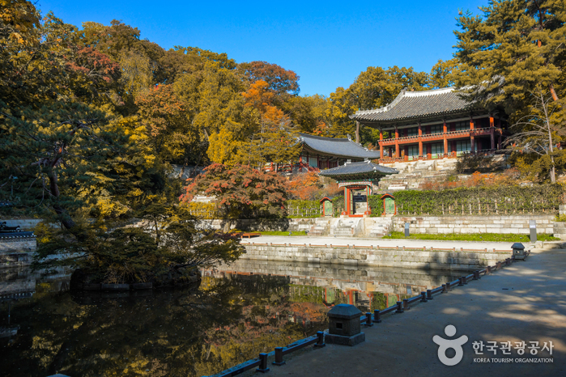

볼거리
창덕궁과 후원
유네스코 세계 문화 유산으로 지정된 조선시대 궁궐
창덕궁은 경복궁 다음으로 지어진 별궁으로 성종 때부터는 본궁 역할을 하는 궁궐이 되었다고 하네요~
또 창덕궁 후원은 태종 때 만들어진 것으로 임금을 비롯한 왕족들이 휴식하던 곳이에요~
자연 그대로 모습을 간직한 채 꼭 필요한 곳에만 사람의 손을 댄 우리나라의 으뜸가는 정원도 함께 볼 수 있어요!
오늘 같은 날, 창덕궁과 후원을 방문해 보는 건 어떨까요?